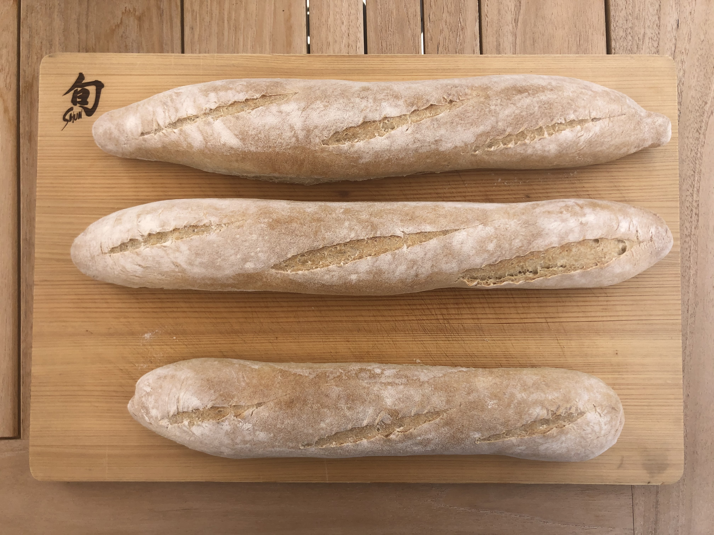

Baguette

Ingredients
Starter (poolish)
- 1/2 cup (113g) water, cool
- 1/16 teaspoon (a pinch) active dry yeast or instant yeast*
- 1 cup (120g) King Arthur Unbleached All-Purpose Flour
- *Substitute 1 tablespoon (25g) healthy sourdough starter (fed or unfed) for the yeast, if desired.
Dough
- 1 cup + 2 tablespoons (255g) water, lukewarm
- All of the starter
- 1 and 1/2 teaspoons active dry yeast or instant yeast
- 3 and 1/2 cups (420g) King Arthur Unbleached All-Purpose Flour
- 2 teaspoons (12g) table salt